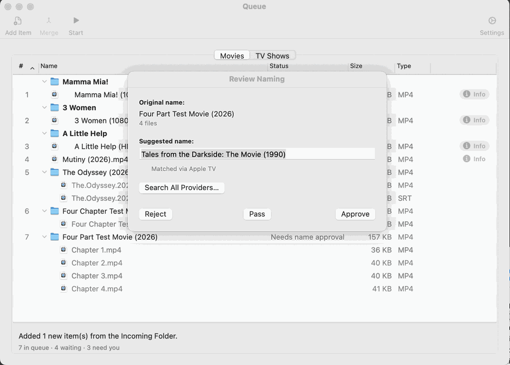
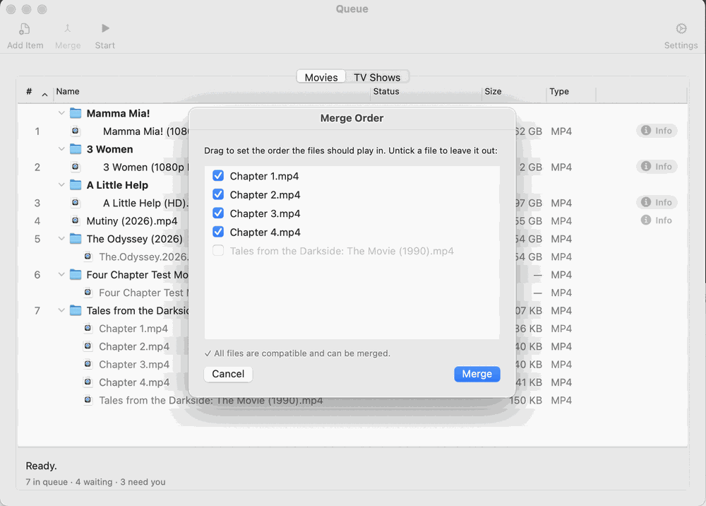

Drop a finished download into your Incoming Folder. (To skip waiting, click Scan Now in Preferences → Sources → Media Intake.)
Open Window → Show Movies Queue. The download appears as a row marked as waiting for naming. TV episodes are sent to the TV Shows Queue automatically.
Double-click the row. The Naming Review sheet shows a suggested name in the form Title Vol N [Studio] (Year). Edit it if needed and click Approve.
What happens next depends on the files in the folder:
One file: M3 checks the online match. If it is confident, the row is ready at once. If not, double-click the row again for the Metadata Review sheet, confirm the match and choose Portrait or Landscape artwork.
Several parts of one movie: double-click the row to open the Merge Review sheet, drag the parts into play order and confirm. M3 joins them without re-encoding and adds a chapter at each join.
Click Start in the Queue toolbar. M3 writes the file, fetches metadata and artwork, tags it, and moves the folder into Ready for Media Library.
Open the Ready folder and check the result. That is your final checkpoint before the file goes to Plex, Jellyfin, Apple TV or wherever your library lives.

The Naming Review sheet.

The Merge Review sheet: drag the parts into play order.